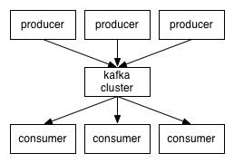

编译自官方文档
Apache Kafka是一个分布式消息发布订阅系统。它最初由LinkedIn公司基于独特的设计实现为一个分布式的提交日志系统( a distributed commit log)，，之后成为Apache项目的一部分。Kafka系统快速、可扩展并且可持久化。它的分区特性，可复制和可容错都是其不错的特性。
Apache Kafka与传统消息系统相比，有以下不同：
- 它被设计为一个分布式系统，易于向外扩展；
- 它同时为发布和订阅提供高吞吐量；
- 它支持多订阅者，当失败时能自动平衡消费者；
它将消息持久化到磁盘，因此可用于批量消费，例如ETL，以及实时应用程序。
First let's review some basic messaging terminology:
首先来了解一下Kafka所使用的基本术语：- Topic
- Kafka将消息种子(Feed)分门别类， 每一类的消息称之为话题(Topic).
- Producer
- 发布消息的对象称之为话题生产者(Kafka topic producer)
- Consumer
- 订阅消息并处理发布的消息的种子的对象称之为话题消费者(consumers)
- Broker
- 已发布的消息保存在一组服务器中，称之为Kafka集群。集群中的每一个服务器都是一个代理(Broker). 消费者可以订阅一个或多个话题，并从Broker拉数据，从而消费这些已发布的消息。
听起来和JMS消息处理差不多？
让我们站的高一点，从高的角度来看，Kafka集群的业务处理就像这样子：

Client和Server之间的交流通过一条简单、高性能并且不局限某种开发语言的TCP协议。除了Java Client外，还有非常多的其它编程语言的Client。
话题和日志 (Topic和Log)
更深入的了解一下Kafka中的Topic.
Topic是发布的消息的类别或者种子Feed名。对于每一个Topic, Kafka集群维护这一个分区的log,就像下图中的示例：
每一个分区都是一个顺序的、不可变的消息队列， 并且可以持续的添加。分区中的消息都被分配了一个序列号，称之为偏移量(offset),在每个分区中此偏移量都是唯一的。
Kafka集群保持所有的消息，直到它们过期， 无论消息是否被消费了。
实际上消费者所持有的仅有的元数据就是这个偏移量，也就是消费者在这个log中的位置。 这个偏移量由消费者控制：正常情况当消费者消费消息的时候，偏移量也线性的的增加。但是实际偏移量由消费者控制，消费者可以将偏移量重置为更老的一个偏移量，重新读取消息。
可以看到这种设计对消费者来说操作自如， 一个消费者的操作不会影响其它消费者对此log的处理。
再说说分区。Kafka中采用分区的设计有几个目的。一是可以处理更多的消息，不受单台服务器的限制。Topic拥有多个分区意味着它可以不受限的处理更多的数据。第二，分区可以作为并行处理的单元，稍后会谈到这一点。
分布式(Distribution)
Log的分区被分布到集群中的多个服务器上。每个服务器处理它分到的分区。 根据配置每个分区还可以复制到其它服务器作为备份容错。
每个分区有一个leader，零或多个follower。Leader处理此分区的所有的读写请求而follower被动的复制数据。如果leader当机，其它的一个follower会被推举为新的leader。
一台服务器可能同时是一个分区的leader，另一个分区的follower。 这样可以平衡负载，避免所有的请求都只让一台或者某几台服务器处理。
生产者(Producers)
生产者往某个Topic上发布消息。生产者也负责选择发布到这此Topic上的哪一个分区。最简单的方式从分区列表中轮流选择。也可以根据某种算法依照权重选择分区。开发者负责如何选择分区的算法。
消费者(Consumers)
通常来讲，消息模型可以分为两种， 队列和发布-订阅式。 队列的处理方式是 一组消费者从服务器读取消息，一条消息只有其中的一个消费者来处理。在发布-订阅模型中，消息被广播给所有的消费者，接收到消息的消费者都可以处理此消息。Kafka为这两种模型提供了单一的消费者抽象模型： 消费者组 （consumer group）。
消费者用一个消费者组名标记自己。 一个发布在Topic上消息被分发给此消费者组中的一个消费者。
假如所有的消费者都在一个组中，那么这就变成了queue模型。
假如所有的消费者都在不同的组中，那么就完全变成了发布-订阅模型。
更通用的， 我们可以创建一些消费者组作为逻辑上的订阅者。每个组包含数目不等的消费者， 一个组内多个消费者可以用来扩展性能和容错。正如下图所示：
正像传统的消息系统一样，Kafka保证消息的顺序不变。
再详细扯几句。传统的队列模型保持消息，并且保证它们的先后顺序不变。但是， 尽管服务器保证了消息的顺序，消息还是异步的发送给各个消费者，消费者收到消息的先后顺序不能保证了。这也意味着并行消费将不能保证消息的先后顺序。用过传统的消息系统的同学肯定清楚，消息的顺序处理很让人头痛。如果只让一个消费者处理消息，又违背了并行处理的初衷。
在这一点上Kafka做的更好，尽管并没有完全解决上述问题。 Kafka采用了一种分而治之的策略：分区。 因为Topic分区中消息只能由消费者组中的唯一一个消费者处理，所以消息肯定是按照先后顺序进行处理的。但是它也仅仅是保证Topic的一个分区顺序处理，不能保证跨分区的消息先后处理顺序。
所以，如果你想要顺序的处理Topic的所有消息，那就只提供一个分区。
Kafka的保证(Guarantees)
- 生产者发送到一个特定的Topic的分区上的消息将会按照它们发送的顺序依次加入
- 消费者收到的消息也是此顺序
- 如果一个Topic配置了复制因子( replication facto)为N， 那么可以允许N-1服务器当掉而不丢失任何已经增加的消息
用例 (Use CASE)
Kafka可以用于：
- 消息系统， 例如ActiveMQ 和 RabbitMQ.
- 站点的用户活动追踪。 用来记录用户的页面浏览，搜索，点击等。
- 操作审计。 用户/管理员的网站操作的监控。
- 日志聚合。收集数据，集中处理。
- 流处理。
- [Event sourcing] (http://martinfowler.com/eaaDev/EventSourcing.html)
- Commit Log
讲了Kafka的背景知识这么多，我们还是快点开始实践之旅吧。
假定你还没有任何的Kafka和Zookeeper环境。
第一步: 下载代码
下载 0.8.1 版本并解压。 （当前最新的稳定版本是0.8.1.1）
|
|
第二步: 启动服务
Kafka使用Zookeeper所以你可能先要安装一个ZooKeeper.你可以使用kafka中打包好的脚本或者一个配置好的Zookeeper.
|
|
现在可以启动Kafka了:
|
|
第三步: 新建一个话题Topic
Topic的名字叫"test",只有一个分区和一个备份。
|
|
查看存在的Topic列表:
|
|
除了手工创建Topic，你也可以配置你的broker当发布一个不存在的topic时自动创建topic。
第四步: 发送消息
Kafka提供了一个命令行的工具，可以从输入文件或者命令行中读取消息并发送给Kafka集群。每一行是一条消息。
|
|
第五步: 消费消息
Kafka也提供了一个消费消息的命令行工具。
|
|
这些命令行工具有很多的选项，你可以查看他们的文档来了解更多的功能。
第六步: 设置多个broker
目前我们运行在一个broker，不好玩。
让我们来点大的。
首先为每个broker创建一个配置文件。
|
|
修改文件如下:
|
|
broker.id属性别重样。为了在一台机器上启动两个broker，改了一下它们的port的。
Zookeeper还在，上面用的broker还活着。 来启动这两个broker.
|
|
创建一个topic试试， 奢侈一把，把备份设置为3:
|
|
成了。运行 "describe topics" 命令瞧瞧:
|
|
第一行给出了分区的汇总信息。每个分区行给出分区信息。
"leader" 节点是1.
"replicas" 信息，在节点1,2,0上，不管node死活，只是列出信息而已.
"isr" 工作中的复制节点的集合. 也就是活的节点的集合.
来看看一开始创建的节点:
|
|
毫无新意，想必你已经明了了。
发布个消息:
|
|
消费它:
|
|
测试一下容错. 干掉leader,也就是Broker 1:
|
|
Leader被切换到一个follower上节, 点 1 不会被列在isr中了，因为它死了:
|
|
但是，消息没丢啊，不信你试试:
|
|